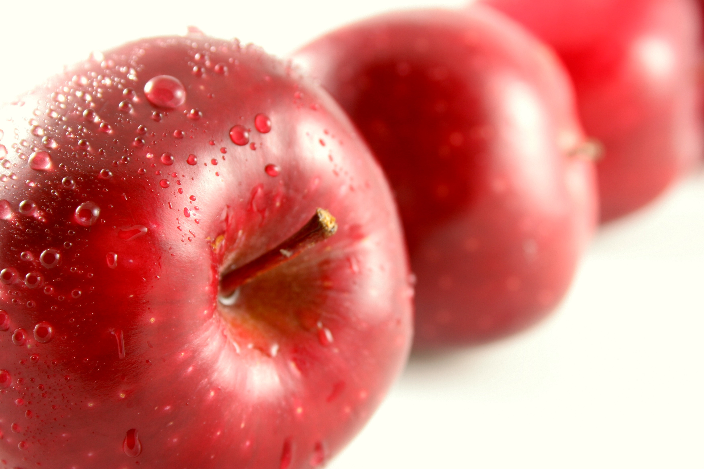

Mere

Mărul este o specie de plante din familia Rosaceae. Această specie cuprinde între 44 și 55 de soiuri cunoscute, care se prezintă ca pomi sau arbuști. Varietățile de măr cresc în zona temperată nordică din Europa, Asia și America de Nord, printre acestea existând un număr mare de hibrizi.